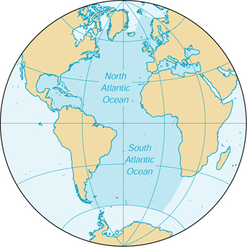

| Atlantic Ocean |
|
|
 | |
| Introduction |
Background: A spring 2000 decision by the International Hydrographic Organization delimited a fifth world ocean from the southern portions of the Atlantic Ocean, Indian Ocean, and Pacific Ocean. The new ocean extends from the coast of Antarctica north to 60 degrees south latitude which coincides with the Antarctic Treaty Limit. The Atlantic Ocean remains the second-largest of the world's five oceans (after the Pacific Ocean, but larger than the Indian Ocean, Southern Ocean, and Arctic Ocean).
| Geography |
Location: body of water between Africa, Europe, the Southern Ocean, and the Western Hemisphere
Geographic coordinates: 0 00 N, 25 00 W
Map references: World
Area:
total:
76.762 million sq km
note:
includes Baltic Sea, Black Sea, Caribbean Sea, Davis Strait, Denmark Strait, part of the Drake Passage, Gulf of Mexico, Mediterranean Sea, North Sea, Norwegian Sea, almost all of the Scotia Sea, and other tributary water bodies
Area - comparative: slightly less than 6.5 times the size of the US
Coastline: 111,866 km
Climate: tropical cyclones (hurricanes) develop off the coast of Africa near Cape Verde and move westward into the Caribbean Sea; hurricanes can occur from May to December, but are most frequent from August to November
Terrain: surface usually covered with sea ice in Labrador Sea, Denmark Strait, and Baltic Sea from October to June; clockwise warm-water gyre (broad, circular system of currents) in the northern Atlantic, counterclockwise warm-water gyre in the southern Atlantic; the ocean floor is dominated by the Mid-Atlantic Ridge, a rugged north-south centerline for the entire Atlantic basin
Elevation extremes:
lowest point:
Milwaukee Deep in the Puerto Rico Trench -8,605 m
highest point:
sea level 0 m
Natural resources: oil and gas fields, fish, marine mammals (seals and whales), sand and gravel aggregates, placer deposits, polymetallic nodules, precious stones
Natural hazards: icebergs common in Davis Strait, Denmark Strait, and the northwestern Atlantic Ocean from February to August and have been spotted as far south as Bermuda and the Madeira Islands; ships subject to superstructure icing in extreme northern Atlantic from October to May; persistent fog can be a maritime hazard from May to September; hurricanes (May to December)
Environment - current issues: endangered marine species include the manatee, seals, sea lions, turtles, and whales; drift net fishing is hastening the decline of fish stocks and contributing to international disputes; municipal sludge pollution off eastern US, southern Brazil, and eastern Argentina; oil pollution in Caribbean Sea, Gulf of Mexico, Lake Maracaibo, Mediterranean Sea, and North Sea; industrial waste and municipal sewage pollution in Baltic Sea, North Sea, and Mediterranean Sea
Geography - note: major chokepoints include the Dardanelles, Strait of Gibraltar, access to the Panama and Suez Canals; strategic straits include the Strait of Dover, Straits of Florida, Mona Passage, The Sound (Oresund), and Windward Passage; the Equator divides the Atlantic Ocean into the North Atlantic Ocean and South Atlantic Ocean
| Government |
Data code: none; the US Government has not approved a standard for hydrographic codes - see the Cross-Reference List of Hydrographic Data Codes appendix
| Economy |
Economy - overview: The Atlantic Ocean provides some of the world's most heavily trafficked sea routes, between and within the Eastern and Western Hemispheres. Other economic activity includes the exploitation of natural resources, e.g., fishing, the dredging of aragonite sands (The Bahamas), and production of crude oil and natural gas (Caribbean Sea, Gulf of Mexico, and North Sea).
| Transportation |
Ports and harbors: Alexandria (Egypt), Algiers (Algeria), Antwerp (Belgium), Barcelona (Spain), Buenos Aires (Argentina), Casablanca (Morocco), Colon (Panama), Copenhagen (Denmark), Dakar (Senegal), Gdansk (Poland), Hamburg (Germany), Helsinki (Finland), Las Palmas (Canary Islands, Spain), Le Havre (France), Lisbon (Portugal), London (UK), Marseille (France), Montevideo (Uruguay), Montreal (Canada), Naples (Italy), New Orleans (US), New York (US), Oran (Algeria), Oslo (Norway), Peiraiefs or Piraeus (Greece), Rio de Janeiro (Brazil), Rotterdam (Netherlands), Saint Petersburg (Russia), Stockholm (Sweden)
Transportation - note: Kiel Canal and Saint Lawrence Seaway are two important waterways
| Transnational Issues |
Disputes - international: some maritime disputes (see littoral states)